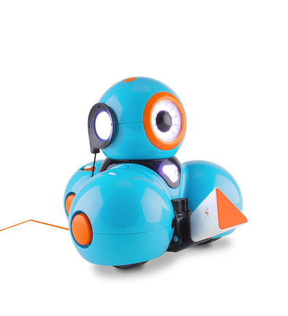
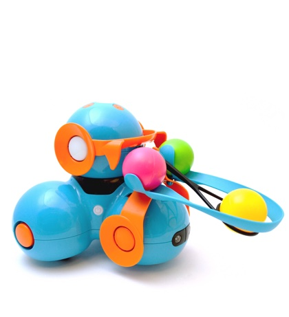
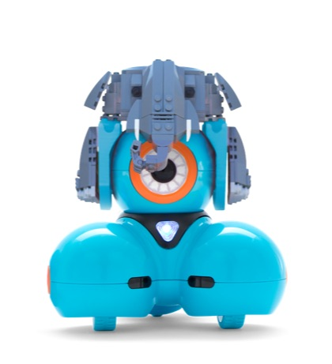
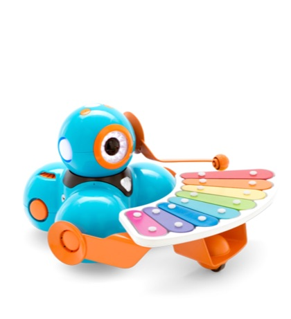
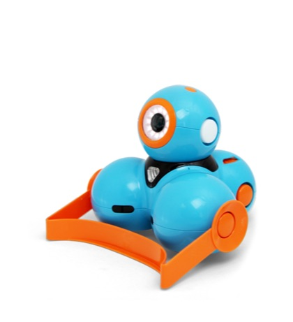
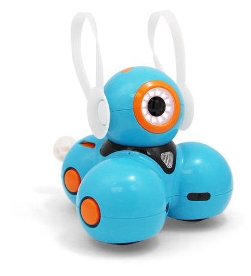

Conheça Dash
Dash é um robô divertido, pronto para usar assim que retirado da caixa, ele responde a comandos de voz, é capaz de ultrapassar obstáculos, dançar e cantar. Dash é o robô dos sonhos. Utilize os aplicativos Wonder, Blockly, e outros disponíveis em iOS e Android para criar novos padrões de comportamento para ele. Dash vem com centenas de projetos e brincadeiras divertidas sobre programação prontos para educar seus filhos para o futuro, sem necessidade de livros.
Construido para inspirar

Kit Sketch
ver vídeo!

Catapulta
ver vídeo!

Blocos Conectores
Use blocos de montar LEGO para transformar Dash em qualquer coisa

Xilofone
Componha e toque músicas

Escavadeira
Transforme Dash em uma escavadeira

Orelhas de Coelho
Transforme Dash em uma escavadeira